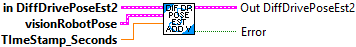
Add a vision measurement to the Unscented Kalman Filter. This will correct the odometry pose estimate while still accounting for measurement noise.
This method can be called as infrequently as you want, as long as you are calling DifferentialDrivePoseEstimator_update every loop.
To promote stability of the pose estimate and make it robust to bad vision data, we recommend only adding vision measurements that are already within one meter or so of the current pose estimate.
Inputs:
- InDIffDrivePoseEstimate -- Data cluster for this system
- visionRobotPoseMeters -- The pose of the robot as measured by the vision camera.
- timestampSeconds -- The timestamp of the vision measurement in seconds. Note that if you don't use your own time source by calling DifferentialDrivePoseEstimator_updateWithTime then you must use a timestamp with an epoch since FPGA startup (i.e. the epoch of this timestamp is the same epoch as Timer.getFPGATimestamp.) This means that you should use Timer.getFPGATimestamp as your time source in this case.
Outputs:
- OutDIffDrivePoseEstimate -- Data cluster for this system
- Error -- Returns TRUE if an error occured.
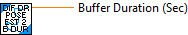
Gets the pose of the robot at the current time as estimated by the Unscented Kalman Filter.
Inputs:
- DiffDrivePoseEst - System data cluster
Outputs:
- EstimatedPose - The estimated robot pose in meters.
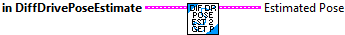
Gets the pose of the robot at the current time as estimated by the Unscented Kalman Filter.
Inputs:
- DiffDrivePoseEst - System data cluster
Outputs:
- EstimatedPose - The estimated robot pose in meters.
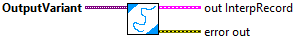
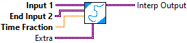
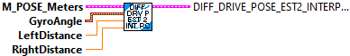
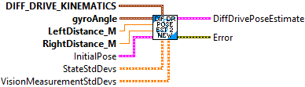
This class wraps Differential Drive Odometry to fuse latency-compensated vision measurements with differential drive encoder measurements. It is intended to be a drop-in replacement for DiffDrvOdom2; in fact, if you never call DiffDrvPoseEst2_AddVisionMeasurement and only call DiffDrvPoseEst2_Update then this will behave exactly the same as DiffDrvOdom2.
DiffDrvPoseEst2_Update should be called every robot loop.
DiffDrvPoseEst2_AddVisionMeasurement can be called as infrequently as you want. If you never call it then this set of VI will behave exactly like regular encoder odometry.
Constructs a DifferentialDrivePoseEstimator.
The default standard deviations of the model states are 0.02 meters for x, 0.02 meters for y, and 0.01 radians for heading. The default standard deviations of the vision measurements are 0.1 meters for x, 0.1 meters for y, and 0.1 radians for heading.
Inputs:
- kinematics -- DiffDriveKinematics -- A correctly-configured kinematics data cluster for your drivetrain.
- gyroAngle -- Rotation2d -- The current gyro angle.
- leftDistanceMeters -- double -- The distance traveled by the left encoder.
- rightDistanceMeters -- double -- The distance traveled by the right encoder.
- initialPoseMeters -- Pose2d -- The starting pose estimate.
- stateStdDevs -- <3,1> matrix -- Standard deviations of the pose estimate (x position in meters, y position in meters, and heading in radians). Increase these numbers to trust your state estimate less.
- visionMeasurementStdDevs -- <3,1> matrix -- Standard deviations of the vision pose measurement (x position in meters, y position in meters, and heading in radians). Increase these numbers to trust the vision pose measurement less.
Outputs:
-- DiffDrivePoseEst2 -- DiffDrivePoseEst2 -- Created data cluster.
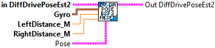
Resets the robot's position on the field.
The gyroscope angle does not need to be reset here on the user's robot code. The library automatically takes care of offsetting the gyro angle.
Inputs:
- inDiffDrvPoseEst2 -- DifDrvPoseEst2 -- Data cluster
- gyroAngle -- Rotation2d -- The angle reported by the gyroscope.
- leftPositionMeters -- double -- The distance traveled by the left encoder.
- rightPositionMeters -- double -- The distance traveled by the right encoder.
- poseMeters -- Pose2d -- The position on the field that your robot is at.
Outputs:
- outDiffDrvPoseEst2 -- DifDrvPoseEst2 -- Updated data cluster
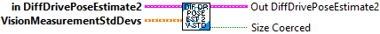
Sets the pose estimator's trust of global measurements. This might be used to change trust in vision measurements after the autonomous period, or to change trust as distance to a vision target increases.
Inputs:
- inDiffDrvPoseEst2 -- DifDrvPoseEst2 -- Data cluster
- VisionMeasurementStdDevs -- <3,1> Matrix -- Standard deviations of the vision measurements. Increase these numbers to trust global measurements from vision less. This matrix is in the form [x, y, theta]Time, with units in meters and radians.
Outputs:
- outDiffDrvPoseEst2 -- DifDrvPoseEst2 -- Updated data cluster
- sizeCooerced -- boolean -- If TRUE, then the size of the vision measurement standard deviations was not 3,1. The size was modified to allow this routine to complete.
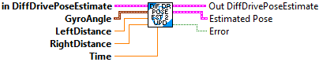
Updates the the Unscented Kalman Filter using only wheel encoder information. Note that this should be called every loop.
Inputs:
- LeftSpeed -- Left wheel speed (meters/sec)
- RightSpeed -- Right wheel speed (meters/sec)
- inDiffDrivePoseEst -- system data cluster
- gyroAngle -- The current gyro angle. (radians)
- distanceLeftMeters -- The total distance travelled by the left wheel in meters. This can be the encoder reading.
- distanceRightMeters -- The total distance travelled by the right wheel in meters. This can be the encoder reading.
Outputs:
- outDiffDrivePoseEst -- system data cluster
- EstimatedPose -- The estimated pose of the robot in meters.
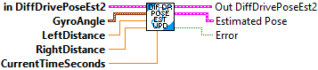
Updates the the Unscented Kalman Filter using only wheel encoder information. Note that this should be called every loop.
Inputs:
- LeftSpeed -- Left wheel speed (meters/sec)
- RightSpeed -- Right wheel speed (meters/sec)
- inDiffDrivePoseEst -- system data cluster
- gyroAngle -- The current gyro angle. (radians)
- currentTime -- Time at which this method was called, in seconds.
- distanceLeftMeters -- The total distance travelled by the left wheel in meters. This can be the encoder reading.
- distanceRightMeters -- The total distance travelled by the right wheel in meters. This can be the encoder reading.
Outputs:
- outDiffDrivePoseEst -- system data cluster
- EstimatedPose -- The estimated pose of the robot in meters.